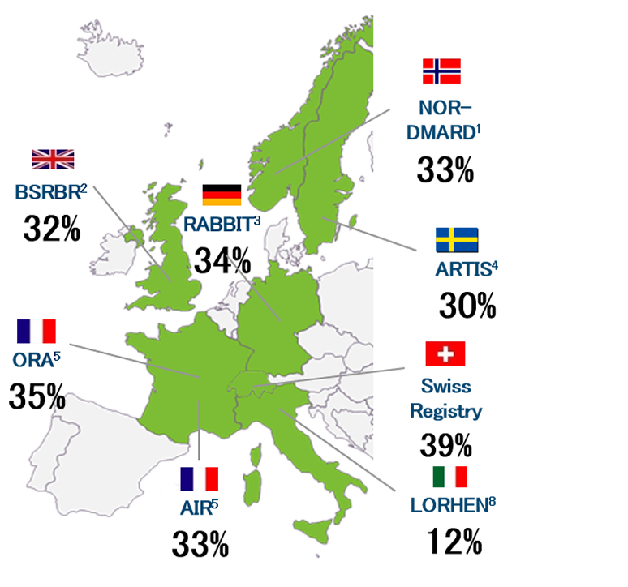
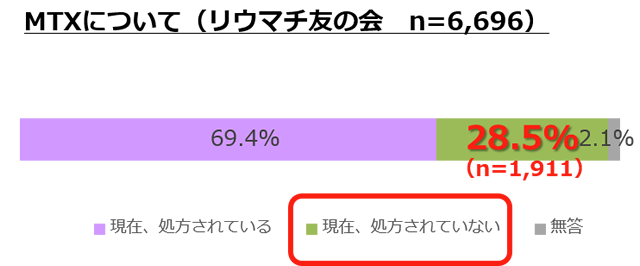

Bio使用患者の3割はMTXの併用ができず、MTXを使用している患者でも3割はMTXを中止している
US並びにEUにおける生物学的製剤Registriesやデータベースから見たMonotherapy患者の割合


Monotherapyで十分な効果のあるBioが望まれる
All registries/studies are anti-TNF focused, other than ORA (abatacept),
AIR (rituximab) and RABBIT (anti-TNFs and anakinra)
1. Heiberg MS et al. Arthritis Rheum. 2008 Feb 15;59:234-40; 2. Soliman MM, et al. Ann Rheum Dis 2011; 70:583–589; 3. Listing J, et al. Arthritis Res Ther 2006; 8:R66;4. Askling J, et al. Ann Rheum Dis 2007; 66:1339–1344; 5. Mariette X, et al. Rheumatology 2011;50:222–229; 6. Yazici Y, et al. Bull NYU Hosp Jt Dis 2008; 66:77–85; 7. Lee SJ, et al. J Rheumatol 2009; 36:1611161–7; 8. Sarzi-Puttini P, et al. Reumatismo, 2008; 60:290-295.